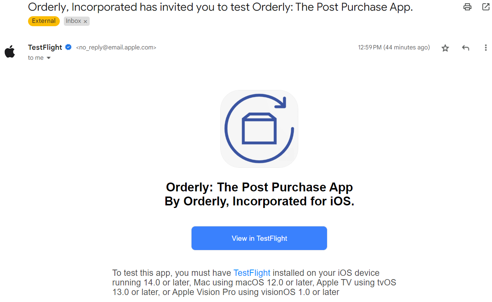
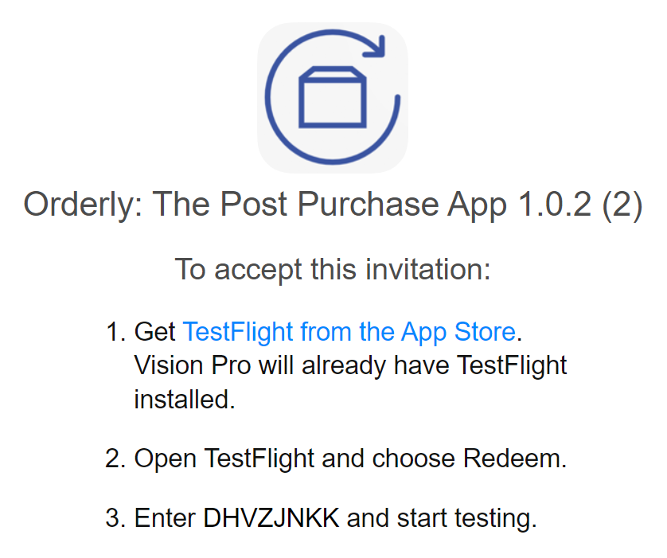
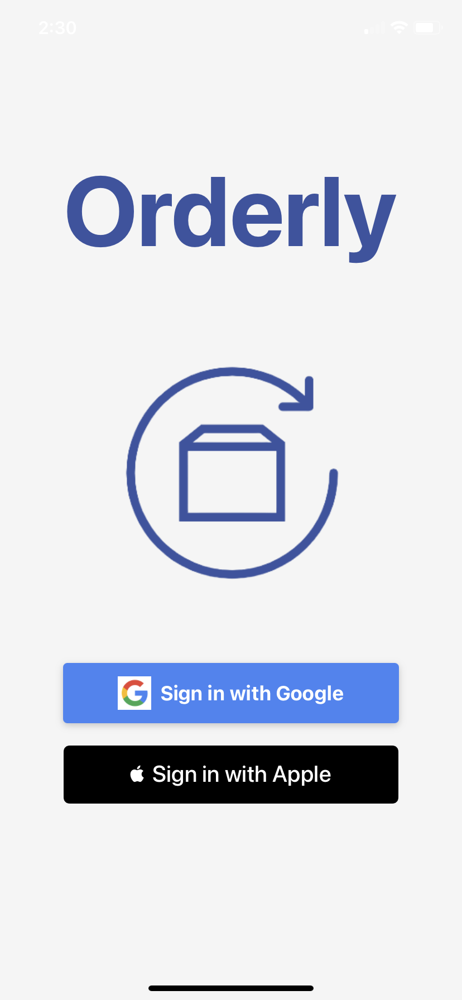
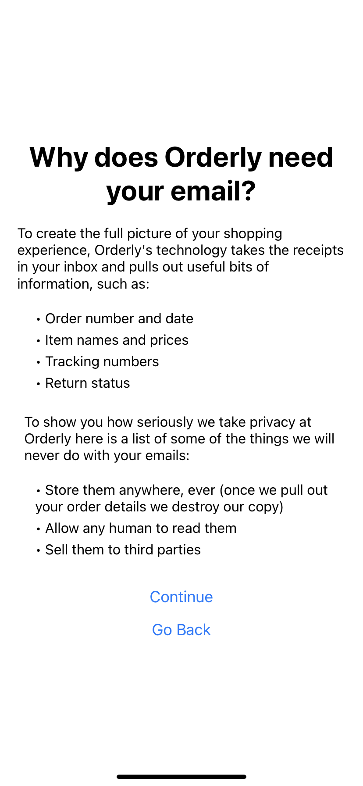
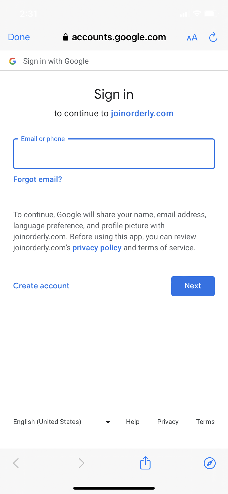
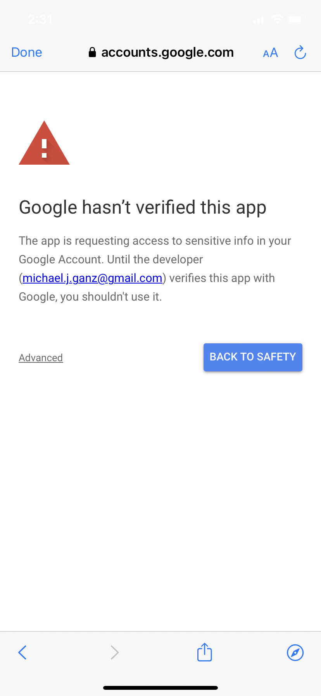
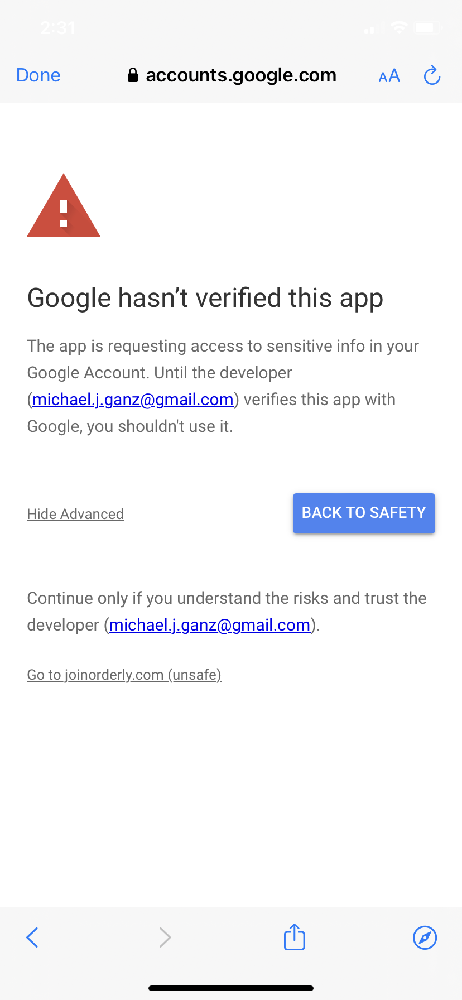
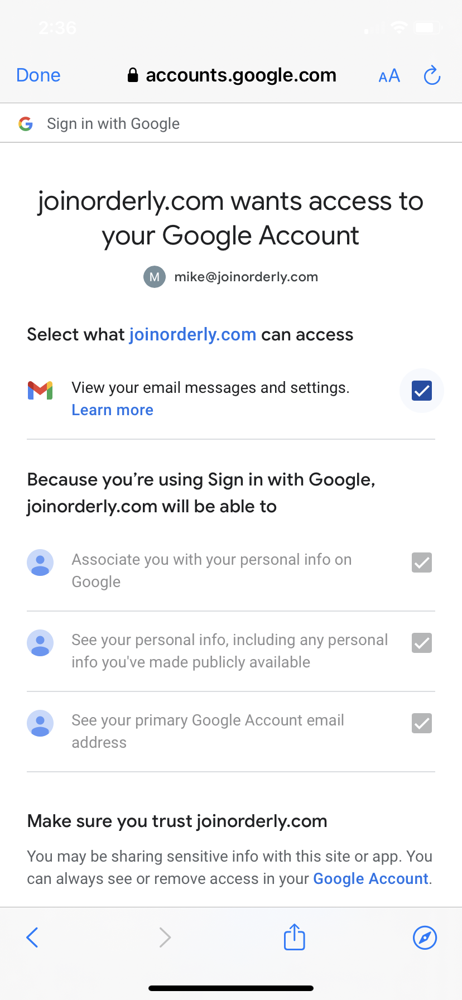

How to Download Orderly
-
Open the email you received from Apple / TestFlight. Click on "View in TestFlight"

-
You'll be brought to a page that explains that you need to download an app called TestFlight to download Orderly. TestFlight is Apple's app store for apps in beta testing. You'll also find an access code (do not use the code from the screenshot below, use the one in your email)

-
Once you've downloaded TestFlight open it up and enter the access code you were given on the previous page. Now you can download Orderly!
-
After Orderly downloads open it up and sign in with the gmail account you use for the majority of your online shopping and enjoy!
How to Log-in to Orderly
-
When you open up Orderly you should see the Homescreen. Click "Sign in with Google" to begin signing in

-
You should see an informational page pop up giving you a brief overview of how Orderly works and we it needs access to your Gmail. Once you've read everything click "Continue"

-
You'll see the option to enter your Gmail login. Enter your user name and proceed normally

-
Next you'll be presented with a screen that says "Google hasn't verified this app." There's nothing to worry about here - this is just beacuse Orderly is still in the verification process with Google. Click "Advanced" on the bottom left, and then "Go to joinorderly.com (unsafe)" again on the bottom left


-
On the next screen make sure you click the checkmark to the right of "View your email messages and settings" and then cick "Continue" at the bottom

-
You did it! Now all that's left is to click Done on the screen that says "Success! CLose the browser to finish login"